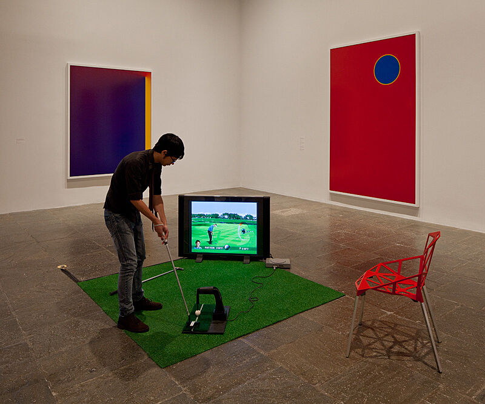
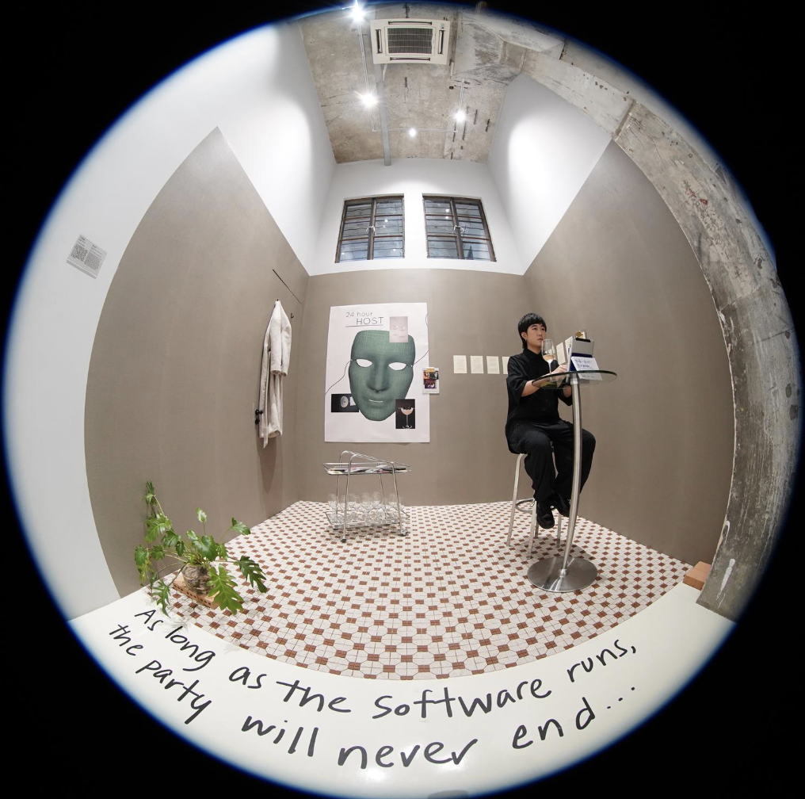
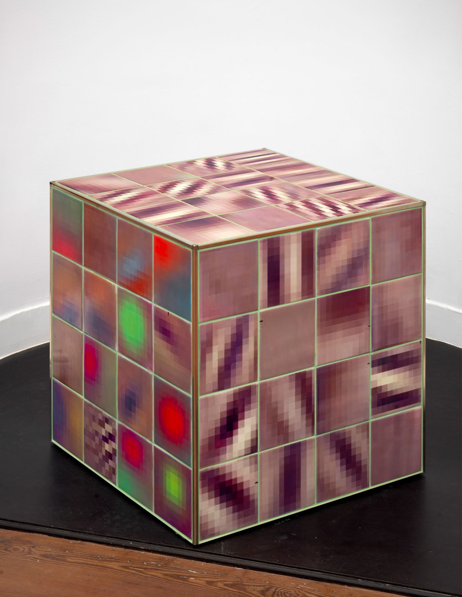
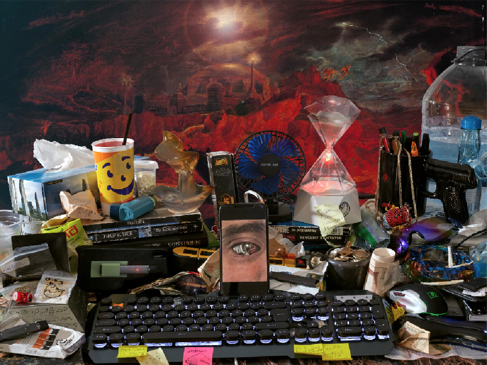
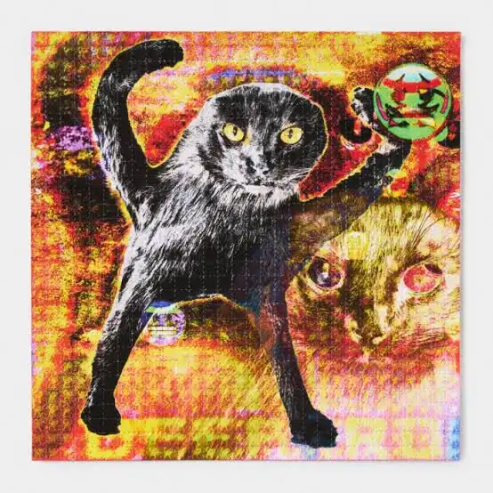

5 Inspiring Web Artists

Cory Arcangel
Cory Arcangel is a digital artist known for working with video games, software, and internet culture. I like how his projects show the creative side of computer programming and digital media.

Lauren McCarthy
Lauren McCarthy is an artist and programmer who creates artworks about artificial intelligence and human relationships. I like how her work makes people think about how technology affects everyday life.

Constant Dullaart
Constant Dullaart is an internet artist who explores how online platforms shape identity and communication. His work often questions social media and digital influence. I find his projects interesting because they reveal hidden structures of the internet.

Jon Rafman
Jon Rafman creates artworks inspired by internet culture and virtual worlds. I like how his work mixes storytelling with images from the internet. His projects often explore online communities and digital identity.

Eva and Franco Mattes
Eva and Franco Mattes are artists who create projects about internet culture and online behavior. I like how they use humor and digital media to question how people behave online.